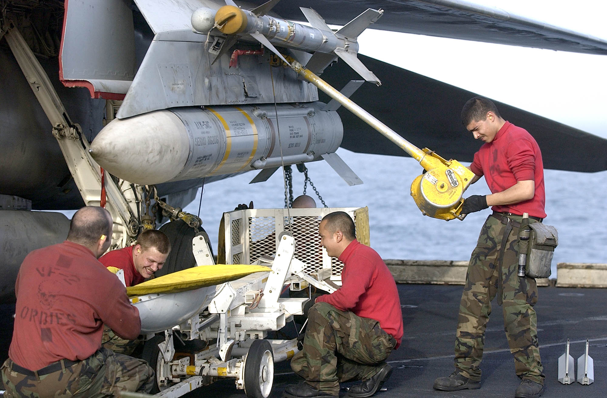

AIM-54 Phoenix
 U.S. Navy photo by Photographer’s Mate 2nd Class Felix Garza Jr. (030320-N-4142G-013)
Note: Depicted missile has yet to have the forward fins attached.
The AIM-54 Phoenix is a long-range air-to-air missile originally designed for the F-111B fleet air defense fighter, which never materialized. When the F-111B project was scrapped, the AIM-54 and the corresponding AN/AWG-9 WCS eventually found their way to the F-14.
The F-14 is capable of carrying up to 6 AIM-54 missiles, four on rails on the fuselage and one each on the glove pylons. Because of the missile cooling system used, the two front Phoenix pylons must always be mounted, meaning that the rear fuselage pylons can’t be used if the front ones aren’t present. The glove pylons contain their own cooling systems.
The missile is capable of engagement both against a single target in STT and multiple targets using track-while-search (TWS).
The AIM-54 is available in two different versions, the AIM-54A and the AIM-54C. The Heatblur Simulations F-14 Tomcat models both versions as well as the AIM-54A with both mk47 and mk60 rocket motors. The two motors on the AIM-54A differ in effective range, while the AIM-54C differs by having a digital seeker instead of an analog one, increasing its performance, as well as an improved, smokeless mk47 rocket motor.
The AIM-54 has a range of at least 60 NM against a fighter-sized target at high altitudes in pulse doppler STT. When using TWS for engagement against multiple targets, this drops to about 50 NM. It has a greater range against large targets and vice versa against smaller targets.
If launched in active mode, the range drops to about 10 NM for a fighter-sized target, varying slightly with target size. Notably, the missile will revert to SARH mode if no target is detected if selected for active launch in a SARH mode.
Missile Preparation
The AIM-54 missile preparation is started by selecting the MSL PREP switch on the pilot ACM panel or by activating the ACM. This enables power and cooling to the missile and also starts the built-in tests in the missile (BIT).
As with the AIM-7, the AIM-54 is tuned before launch using a transmitter on the rear end of the missile rail, transmitting to the rear receiver of the missile. The whole missile preparation cycle is completed after around 2 minutes, at which time the AIM-54 missiles are indicated ready in the corresponding missile status windows on the pilot ACM.
Launch Modes
The seeker head used in the AIM-54 is capable of both semi-active radar homing (SARH) and active radar homing (ARH).
Normally, the launch to eject (LTE) cycle of the missile is 3 seconds, meaning the time from trigger depression to missile ejection. The exception is the ACM active mode, where the LTE is shortened to 1 second if within 15° from ADL.
TWS SARH/ARH
In TWS, the AN/AWG-9 is capable of supporting the launch of up to 6 AIM-54 missiles against 6 different targets concurrently. In the first stage of the AIM-54 engagement, the missile is guided semi-actively by the AN/AWG-9 radar using both guidance commands transmitted via the radar and radar energy reflected off the target. Then, when the missile is within range of its seeker’s ARH mode, the AN/AWG-9 commands the missile to switch to ARH.
Absence of this command via the AN/AWG-9 radar means that the missile won’t switch to the ARH mode. The AN/AWG-9, however, continues to transmit guidance commands to the missile as a fallback in case the missile can’t acquire the target autonomously. This means that the AIM-54 isn’t a “fire and forget” missile per se, but it can be considered autonomous after transfer to ARH.
PD STT SARH
In pulse doppler STT, the AIM-54 uses SARH all the way to the target, receiving guidance commands at a greater rate than in TWS and also continuous spotlighting of the target because of the STT mode being used. This increases the effective range of the AIM-54 seeker slightly.
Active-Radar Homing (ARH)
 The AIM-54 can also be commanded to go active directly after launch in both TWS and pulse doppler STT modes by setting the MSL OPTIONS switch to PH ACT before launch. This tells the WCS to immediately command the AIM-54 to go active in the first guidance command after launch. If launched at a target within 6 NM in the target's rear hemisphere or 10 NM in its forward hemisphere, the WCS will also automatically command this mode instead of a SARH mode.
The AIM-54 can also be commanded to go active directly after launch in both TWS and pulse doppler STT modes by setting the MSL OPTIONS switch to PH ACT before launch. This tells the WCS to immediately command the AIM-54 to go active in the first guidance command after launch. If launched at a target within 6 NM in the target's rear hemisphere or 10 NM in its forward hemisphere, the WCS will also automatically command this mode instead of a SARH mode.
If the target is not detected actively by the seeker, it will still fall back to SARH until the seeker can acquire on its own, like in the two SARH modes.
Note: Setting the MSL OPTIONS switch to PH ACT with an AIM-54 in the air will not make it go active; the PH ACT option can only be set before missile launch.
ACM Active
The last mode is ACM active, in which the missile is commanded active before launch, making this the only mode where the missile is truly fire and forget. The AIM-54 missile receives the active message before launch from the WCS in addition to a command prepositioning the seeker head to have it look at the current WCS track if available.
ACM active is commanded when BRSIT (boresight) is selected on the pilot ACM panel, when having the ACM active without a WCS track, and when using a non-pulse doppler radar mode or TCS track. When using boresight or ACM without a track, the missile will launch along the ADL, locking onto the first target seen while launching at a non-pulse doppler radar track, the seeker head will be prepositioned onto that track.
ECM Mode
In all of the guidance modes, the seeker head automatically switches to a passive ECM follow if jammed, angle-tracking the target until it can again track the target using SARH or ARH. This is done without crew action and is not indicated to the operator.
Missile Operation
The AIM-54 missile is selected with the weapon selector on the pilot stick by selecting the SP/PH (sparrow/phoenix) position and then depressing the selector to switch from SP to PH. It is possible to switch back to SP by again depressing the weapon selector.
When used in boresight or ACM without a WCS track, the HUD will not indicate any symbology apart from the ADL, which is used to aim the missile.
When selected with a WCS track in STT, the HUD will display the Target Designator, and if a TCS track exists, the Movable Reticle overlaying the target, the former indicating WCS track and the latter TCS line of sight. The range scale on the right side of the HUD indicates range to target and Rmin and Rmax, while the VDI, DDD, and TID display the attack guidance symbology.
TWS
When using the AIM-54 with TWS, the WCS automatically prioritizes the tracked targets, giving them a firing order number indicating missile launch order. As the first target is launched at, the first track’s number is removed, and the other tracks’ numbers are decreased by one.
To continue to engage tracks 2 through 6, the pilot depresses the trigger once for each target, waits until the missile is clear, and then depresses the trigger again for the next missile, and so on until the desired number of missiles are away.
After missile launch, the prioritization numbers on the right side of the targeted tracks are replaced with the TTI or Time to Impact number, showing calculated time until missile hits the target.
Additionally, when the AN/AWG-9 has sent the active command to the missile, the TTI numbers blink, indicating that the missile targeting the track has been commanded to active mode. When this happens depends on the setting of the TGTS switch on the DDD. SMALL equals 6NM, NORM equals 10NM, and LARGE equals 13NM. The setting set before launch is used.
The targets currently under missile attack brighten until estimated time to target plus 15 seconds has elapsed, and when at 15 seconds past estimated time to the last target, the break-away cross is also displayed on the VDI, DDD, and TID.
For more info regarding the applicable TID symbology, see TID Symbology.
 It is possible to force the WCS to include a target by setting it to mandatory attack using the CAP and also to exclude a target by setting it to do not attack on the same panel. In addition, it is possible to command the WCS to set a track as priority 1 in the firing order by hooking it and pressing NEXT LAUNCH on the RIO armament panel.
It is possible to force the WCS to include a target by setting it to mandatory attack using the CAP and also to exclude a target by setting it to do not attack on the same panel. In addition, it is possible to command the WCS to set a track as priority 1 in the firing order by hooking it and pressing NEXT LAUNCH on the RIO armament panel.
If not already in TWS AUTO, the WCS automatically switches to this mode, thus assuming control over the AN/AWG-9 radar to keep the engaged targets illuminated. In addition to the track numbering, the TID also displays a steering centroid indicating the center weight of the TWS scan pattern.
The HUD and VDI display a steering cue guiding the pilot towards optimal target illumination and also display range and Rmin and Rmax to target number 1. The TID displays the complete attack symbology with target prioritization numbers and individual optimum launch ranges. For more info, see Track While Scan (TWS).
AIM-54 in DCS
The HB DCS F-14 includes custom AIM-54A and AIM-54C missiles, the AIM-54A with a choice of two different rocket motors. The aerodynamics and engine performance for these missiles have been extensively researched and computer simulated to make the included missiles behave as realistically as possible in regards to aerodynamics.
Regarding missile seeker and flight profile, we’ve worked with Eagle Dynamics to enable our F-14 AN/AWG-9 to control the AIM-54 to a degree. In DCS, this means the following:
In TWS, the missiles will fly out using guidance from the AN/AWG-9 until about 16 seconds to impact, at which time the AN/AWG-9 will tell the missile to go active if it’s still within the radar scan zone. The exact distance at which the AN/AWG-9 sends the ATC depends on the setting of the TGTS switch, as detailed above. This results in a silent engagement until the missiles go active, at which time the target’s radar warning receiver will get an indication of an active missile engaging it. If fired at range, the AIM-54 will loft for greater range. Setting the different seeker activation ranges impacts the amount of warning the target will get but also the amount of time the missile needs to be supported.
In PD-STT (Pulse-Doppler Single Target Track), the AIM-54 will be launched in a pure semi-active mode and be guided in that mode all the way to the target without going active. This means that the engaged target will get an immediate engagement warning through its radar warning receiver from the AN/AWG-9 as soon as the AIM-54 leaves the rail. Like in TWS, the missile will loft if fired at range.
For all other modes and within 10NM of the target (or in ACM or PH ACT), the AIM-54 will launch active off the rail, and the targeted aircraft will immediately see the missile’s own radar actively engaging it. It will not loft in this case, and thus the range is less than in the other two cases.
The AIM-54C in DCS currently is not affected by the Target Size Switch.